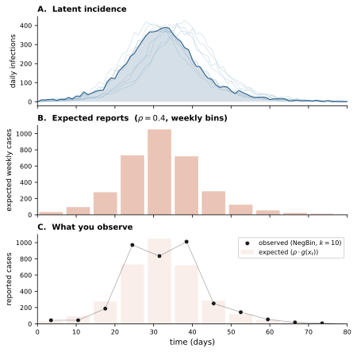
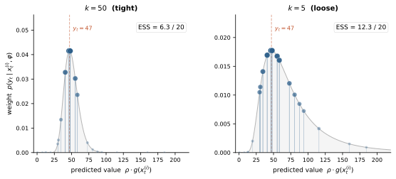
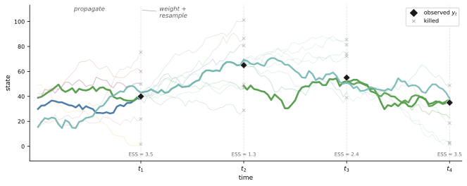

Inference Guide
How the particle filter, IF2, PGAS, and NUTS work, what the diagnostics mean, and how the fitting pipeline connects them.
1. The likelihood you want but can’t have
A compartmental model defines a stochastic process over a latent state \(x_t\) — the compartment populations (S, E, I, R) evolving through time. You never observe this state directly. What you observe is a noisy, incomplete projection: weekly case reports, seroprevalence surveys, death counts.
The goal of inference is to recover model parameters from these observations. This means evaluating the marginal likelihood — the probability of the observed data \(y_{1:T}\) given parameters, integrated over all possible latent trajectories:
\[p(y_{1:T} \mid \theta, \varphi) = \int p(y_{1:T}, x_{0:T} \mid \theta, \varphi) \, dx_{0:T}\]
This integral is over every possible path the epidemic could have taken. For a model with thousands of individuals tracked over hundreds of observation times, it is intractable.
But the integrand — the joint density of data and trajectory — factors into pieces you can reason about:
\[p(y_{1:T}, x_{0:T} \mid \theta, \varphi) = \underbrace{\prod_{t=1}^{T} p(y_t \mid x_t, \varphi)}\_{\text{observation likelihood}} \cdot \underbrace{\prod_{t=1}^{T} p(x_t \mid x_{t-1}, \theta)}\_{\text{transition likelihood}} \cdot \; p(x_0 \mid \theta)\]
Both factors are likelihoods — conditional probabilities viewed as functions of parameters. Together they form the complete-data likelihood: the probability of everything you know (data + trajectory) given parameters. The marginal likelihood integrates the transition likelihood over trajectories; the complete-data likelihood doesn’t.
Two kinds of parameters appear:
- \(\theta\) — dynamics parameters: transmission rate \(\beta\), recovery rate \(\gamma\), overdispersion \(\sigma^2\), initial conditions. These control how the epidemic unfolds.
- \(\varphi\) — observation parameters: reporting probability \(\rho\), dispersion \(k\), detection probability. These control how the data relates to the latent trajectory.
This factorization is the organizing principle of everything that follows. The observation likelihood depends on \(\varphi\) only. The transition likelihood depends on \(\theta\) only. Every inference algorithm is a strategy for handling these two pieces.

2. Observation likelihood — the piece you can always evaluate
Given a trajectory \(x_{0:T}\) (simulated or sampled), the observation model computes the probability of the data at each observation time. This is cheap, closed-form, and shared by every algorithm in camdl.
How it works
At each observation time \(t\), the model projects the latent state into an observable quantity — typically cumulative flows (incidence) or current compartment counts (prevalence). The observation likelihood then scores the observed data against this projection:
\[p(y_t \mid x_t, \varphi) = f(y_t \mid g(x_t), \varphi)\]
where \(g(x_t)\) is the projection (e.g., total infection flows since last observation) and \(f\) is the likelihood family.
Example: negative binomial case counts
The most common observation model in camdl. Weekly reported cases are a fraction \(\rho\) of true incidence, with overdispersion \(k\):
\[y_t \sim \text{NegBin}\bigl(\text{mean} = \rho \cdot g(x_t),\; r = k\bigr)\]
where \(g(x_t)\) sums the infection flow accumulator over the observation interval. The log-density:
\[\log p(y_t \mid x_t, \varphi) = \log \Gamma(y_t + k) - \log \Gamma(k) - \log(y_t!) + k \log\!\frac{k}{\mu + k} + y_t \log\!\frac{\mu}{\mu + k}\]
with \(\mu = \rho \cdot g(x_t)\) and \(\varphi = (\rho, k)\).
This is one function evaluation per observation time — bounded, smooth, differentiable in \(\varphi\).
Why this matters
When ESS collapses in the particle filter, it’s because the observation likelihood is sharply peaked. The data says “roughly 47 cases this week” and most simulated trajectories produced 0 or 500. More particles help (better coverage of the likely region). Looser observation models help (wider \(k\) spreads the weight across more particles). Understanding the observation likelihood as a weighting function — not just a statistical formality — is the key diagnostic intuition.

3. Transition likelihood — the piece that separates the algorithms
The transition likelihood \(p(x_t \mid x_{t-1}, \theta)\) is the probability of the specific compartment changes that occurred between time steps, viewed as a function of \(\theta\). Whether you can evaluate this density pointwise (not just simulate from it) determines which inference algorithms are available.
Chain-binomial: closed-form density available
In the chain-binomial (Euler-multinomial) backend, one time step draws events from a product of binomials. For each source group \(g\) with source count \(n_g\) and exit probability \(p_g\):
\[p(\text{flows}_g \mid x_{t-1}, \theta) = \text{Multinomial}(\text{flows}_g \mid n_g, p_g)\]
where \(p_g = 1 - \exp(-\text{rate}_g \cdot dt)\) and rates are computed from the propensity expressions.
With overdispersion (\(\sigma^2 > 0\)), the per-capita rate is Gamma-distributed:
\[\gamma_g \sim \text{Gamma}\!\left(\frac{dt}{\sigma^2},\; \frac{\sigma^2}{dt}\right)\]
and the full transition likelihood becomes:
\[p(x_t \mid x_{t-1}, \theta) = \prod_g \text{Multinomial}(\text{flows}_g) \cdot \prod_g \text{Gamma}(\gamma_g)\]
Both terms are closed-form. This is what makes PGAS possible for chain-binomial models: you can evaluate the transition likelihood pointwise, not just simulate from it.
Gillespie / tau-leap: closed-form density not available
For Gillespie SSA, evaluating \(p(x_t \mid x_{t-1}, \theta)\) involves the full sequence of exponential waiting times and event selections — available in principle but computationally expensive for a discretized observation schedule. For tau-leap, the Poisson approximation makes pointwise evaluation feasible but less commonly used in practice.
The key consequence: IF2 and PMMH work with any backend (they only need simulation). PGAS requires chain-binomial (it needs to evaluate the transition likelihood). This isn’t a limitation of the implementation — it’s a fundamental property of the algorithm.
Why the Gamma term matters
The overdispersion Gamma factor \(p(\gamma_g)\) is part of the transition likelihood. If you evaluate it without the Gamma term, you’re computing \(p(\text{flows} \mid \gamma, \theta)\) instead of \(p(\text{flows}, \gamma \mid \theta)\). The complete-data log-likelihood is wrong, and its gradient (used by NUTS) is inconsistent with the value — proposals drift, acceptance rates drop, chains don’t converge.
This is not a theoretical concern. It’s the root cause of real bugs. The Gamma term is modest in magnitude (often a few log-units per substep) but the gradient effect accumulates across hundreds of substeps.
4. Three strategies for the intractable integral
You want \(p(y_{1:T} \mid \theta, \varphi)\) but it’s an integral over all trajectories. Three approaches:
| Strategy | Algorithm | What it computes | Needs transition likelihood? |
|---|---|---|---|
| Estimate the integral stochastically | Particle filter | \(\hat{p}(y \mid \theta, \varphi)\) | No |
| Maximize it | IF2 | \(\arg\max_\theta p(y \mid \theta, \varphi)\) | No |
| Avoid it — work with the joint directly | PGAS | \(p(\theta, \varphi, x \mid y)\) | Yes |
IF2 and the particle filter only need the observation likelihood (§2) and the ability to simulate forward. They never touch the transition likelihood. PGAS uses both pieces — observation likelihood AND transition likelihood — to evaluate the complete-data log-posterior directly, bypassing the intractable integral entirely.
PMMH occupies a middle ground: it uses the particle filter’s stochastic estimate of the marginal likelihood as an MCMC acceptance ratio.
5. The particle filter
The bootstrap particle filter (Gordon, Salmond & Smith 1993) estimates the marginal likelihood by running many simulated trajectories (“particles”) in parallel and resampling them to match the data.
Algorithm
At each observation time \(t\):
- Propagate. Advance all \(N\) particles from \(t-1\) to \(t\) using the process model (\(\theta\), simulation). No likelihood evaluation needed.
- Weight. Score each particle against the data: \(w_t^{(i)} = p(y_t \mid x_t^{(i)}, \varphi)\) — the observation likelihood from §2.
- Resample. Draw \(N\) particles with replacement, proportional to weights. Particles near the data survive; unlikely ones die.

The log-likelihood estimate is the sum of log-normalizing constants:
\[\log \hat{p}(y_{1:T} \mid \theta, \varphi) = \sum_{t=1}^{T} \log\!\left(\frac{1}{N} \sum_{i=1}^{N} w_t^{(i)}\right)\]
This is an unbiased estimate of the marginal likelihood on the probability scale. Its variance decreases with more particles.
ESS — the primary diagnostic
Effective Sample Size measures particle diversity after weighting:
\[\text{ESS}_t = \frac{\left(\sum_i w_t^{(i)}\right)^2}{\sum_i \left(w_t^{(i)}\right)^2}\]
ESS = \(N\) when all weights are equal (data is uninformative or process matches perfectly). ESS = 1 when one particle captures all the weight (data is sharply informative, most trajectories miss).
What low ESS means: The observation likelihood (§2) is concentrating weight on a few particles. During epidemic peaks, most simulated trajectories don’t match the case count closely enough. The PF is still unbiased — the surviving particles are correct — but variance is high.
What to do about it: More particles (brute force). Or looser observation model: estimate \(k\) (NegBin dispersion) rather than fixing it, or add overdispersion (\(\sigma^2\)) to increase process noise. Both widen the effective proposal, keeping more particles alive.
6. IF2 — find the maximum likelihood estimate
Iterated Filtering (Ionides, Bretó & King 2006) finds the MLE \(\hat{\theta}, \hat{\varphi}\) without ever evaluating the transition likelihood. It turns the particle filter into an optimizer.
How it works
IF2 runs the particle filter with one modification: each particle carries its own perturbed copy of the parameters. Perturbations are Gaussian on the transformed scale, and their magnitude decreases (“cools”) across iterations.
In early iterations, large perturbations explore the parameter space. Particles with better parameters (higher observation likelihood weights) survive resampling. In later iterations, small perturbations fine-tune around the emerging optimum.
This is stochastic gradient ascent on the marginal likelihood surface, mediated by particle selection rather than explicit gradient computation. No transition likelihood evaluation, no gradient — just simulation and weighting.
Multi-chain diagnostics
Run \(K\) chains from different starting points. Compare their MLEs.
\(\hat{R}\) (Rhat): For each parameter, compute the ratio of between-chain to within-chain variance. \(\hat{R} < 1.1\): chains agree (converged to same basin). \(\hat{R} > 1.5\): chains found different optima (multimodal surface or insufficient iterations).
Log-likelihood spread: If chains have similar parameters (\(\hat{R} \approx 1\)) but different log-likelihoods (spread > 50), the surface is multimodal — chains found different likelihood basins.
Cooling schedule
The cooling parameter (called cf50 — cooling fraction at 50% of target iterations) controls how fast perturbations decay. Aggressive cooling (0.05) converges fast but may miss basins. Gentle cooling (0.70) explores more but converges slowly. The scout stage uses gentle cooling; refine uses aggressive cooling starting from scout’s best parameters.
Perturbed vs true log-likelihood
IF2’s reported log-likelihood includes the perturbation noise — it’s inflated relative to the true marginal likelihood. The validate stage re-evaluates the MLE with a clean particle filter (no perturbations) to get the true \(\log \hat{p}(y \mid \hat\theta, \hat\varphi)\). Profile likelihoods use this true value, not the IF2 value.
7. PGAS — sample the Bayesian posterior
Particle Gibbs with Ancestor Sampling (Lindsten, Jordan & Schön 2014) produces posterior samples of both parameters AND trajectories. It works with the complete-data posterior directly:
\[\log p(\theta, \varphi \mid x, y) \propto \underbrace{\sum_{t} \log p(y_t \mid x_t, \varphi)}\_{\text{observation (§2)}} + \underbrace{\sum_{t} \log p(x_t \mid x_{t-1}, \theta)}\_{\text{transition (§3)}} + \log p(\theta) + \log p(\varphi)\]
No intractable integral. Every term is evaluable in closed form for chain-binomial models. The \(\theta\)/\(\varphi\) separation from §1 makes the structure visible: observation parameters \(\varphi\) appear only in the first sum, dynamics parameters \(\theta\) appear only in the second.
The Gibbs sweep
Each PGAS sweep alternates two updates:
Update parameters given trajectory. With \(x_{0:T}\) fixed, the complete-data log-posterior above is a tractable function of \((\theta, \varphi)\). Use NUTS (§8) to propose new parameter values. Both \(\theta\) and \(\varphi\) are updated jointly — the separation is conceptual, not operational.
Update trajectory given parameters. With \((\theta, \varphi)\) fixed, run Conditional SMC with Ancestor Sampling (CSMC-AS) to draw a new trajectory. This is a particle filter conditioned on the previous trajectory — it explores nearby trajectory space while maintaining the correct stationary distribution.
The CSMC step is the key innovation over standard Gibbs: it updates the entire \(T\)-dimensional trajectory in one sweep, avoiding the slow mixing of single-site trajectory updates.
Trajectory renewal
After CSMC-AS, the new trajectory partially overlaps with the old one. Trajectory renewal measures what fraction of substeps changed. High renewal (> 50%) means the trajectory is mixing well — CSMC is exploring new epidemic paths. Low renewal (< 10%) means the trajectory is stuck — the reference particle dominates, and parameter updates are exploring around a fixed epidemic narrative.
Low renewal is the most common PGAS failure mode. Remedies: more CSMC particles, tempering (§7.1), or reparameterizing to reduce trajectory-parameter correlation.
7.1 Parallel tempering
For models with multimodal posterior surfaces (multiple epidemic scenarios consistent with the data), single-chain PGAS can get trapped. Parallel tempering runs multiple chains at different “temperatures” \(\beta_k \in [0, 1]\) that flatten the likelihood:
\[p_{\beta}(\theta, \varphi \mid x, y) \propto p(y \mid x, \theta, \varphi)^{\beta} \cdot p(x \mid \theta) \cdot p(\theta) \cdot p(\varphi)\]
Adjacent chains periodically propose swaps. The cold chain (\(\beta = 1\)) targets the true posterior; warm chains (\(\beta < 1\)) explore freely.
Swap rate between adjacent rungs is the key diagnostic. Below 10%: the temperature ladder is too sparse, chains can’t communicate. Above 50%: the ladder is denser than needed (wasting compute).
8. NUTS — parameter proposals within PGAS
The No-U-Turn Sampler (Hoffman & Gelman 2014) proposes new parameters within each PGAS sweep by simulating Hamiltonian dynamics on the complete-data log-posterior surface.
Why NUTS works here
The complete-data log-posterior (§7) is a sum of smooth, differentiable terms. The compiler provides exact gradients via source-to-source symbolic differentiation of rate expressions. No finite differences, no autodiff tape — the OCaml compiler emits rate_grad fields in the IR, and the Rust engine evaluates them.
The gradient decomposes along the §1 factorization:
\[\nabla_\theta \log p = \sum_t \nabla_\theta \log p(x_t \mid x_{t-1}, \theta) + \nabla_\theta \log p(\theta)\]
\[\nabla_\varphi \log p = \sum_t \nabla_\varphi \log p(y_t \mid x_t, \varphi) + \nabla_\varphi \log p(\varphi)\]
Dynamics gradients come from the transition likelihood (Binomial + Gamma). Observation gradients come from the observation likelihood (NegBin, etc.). These are independent computations — a bug in one doesn’t affect the other, which aids debugging.
Diagnostics
Divergent transitions: The leapfrog integrator encountered a region where the posterior surface curves too sharply for the current step size. Usually indicates a poorly conditioned posterior — reparameterize or increase max_treedepth.
Max tree depth hits: NUTS builds a binary tree of leapfrog steps until it “turns around.” Hitting the max depth means the trajectory wanted to go further — the posterior has a long, narrow ridge. Increase max_treedepth or improve the mass matrix.
Mass matrix adaptation: NUTS uses a diagonal or dense mass matrix to precondition the Hamiltonian. During warmup sweeps, the mass matrix adapts to the posterior marginal variances (diagonal) or covariance (dense). Dense mass matrices handle correlated parameters (\(\beta\) and \(\gamma\) are often anticorrelated through \(R_0 = \beta/\gamma\)) but require more warmup to estimate reliably.
9. PMMH — the middle ground
Particle Marginal Metropolis-Hastings (Andrieu, Doucet & Holenstein 2010) uses the particle filter’s likelihood estimate as an MCMC acceptance ratio. It produces posterior samples like PGAS but doesn’t require evaluating the transition likelihood.
At each MCMC step:
- Propose new parameters \((\theta', \varphi')\).
- Run a particle filter to get \(\log \hat{p}(y \mid \theta', \varphi')\).
- Accept/reject using the Metropolis-Hastings ratio with the PF estimate.
The remarkable result: despite the PF estimate being noisy, the MCMC chain targets the exact posterior. The noise inflates the rejection rate (more particles → less noise → higher acceptance) but doesn’t introduce bias.
When to use PMMH over PGAS: When you can’t evaluate the transition likelihood (non-chain-binomial backends), when the model is simple enough that PF variance is manageable, or when you want posterior samples without implementing CSMC.
When to prefer PGAS: For chain-binomial models with many parameters. PGAS evaluates the exact complete-data likelihood (no PF noise), uses NUTS for efficient joint proposals, and produces posterior trajectories as a byproduct. For the models camdl targets — stochastic compartmental models with chain-binomial dynamics — PGAS is almost always the better choice.
10. The fitting pipeline
The camdl fit pipeline connects these algorithms into a workflow where each stage feeds the next.
Scout: find the right basin
camdl fit scout fit.tomlIF2 with many chains (8+), gentle cooling, random starts. Goal: find the region of parameter space where the likelihood is highest. Chains that find different basins are expected — that’s the point. The best chain’s parameters and auto-calibrated rw_sd values carry forward.
Refine: converge within the basin
camdl fit refine fit.toml --starts-from scout/IF2 with fewer chains (4), aggressive cooling, starting from scout’s best parameters. Goal: precise MLE within the basin scout found. \(\hat{R} < 1.05\) for all parameters indicates convergence.
Validate: verify and characterize the MLE
camdl fit validate fit.toml --starts-from refine/Three things happen:
- True log-likelihood at the MLE via clean particle filter (no IF2 perturbations).
- Profile likelihoods for each estimated parameter — 1D slices through the likelihood surface. Profiles that don’t curve indicate unidentifiable parameters.
- ESS diagnostic — if ESS at the MLE is low, the observation model may be misspecified.
PGAS: Bayesian posterior
camdl fit pgas fit.toml --starts-from validate/PGAS starting from the MLE. Produces posterior samples of parameters and (optionally) trajectories. The MLE from validate provides a good initial trajectory and mass matrix starting point.
Status
camdl fit status fit.tomlColored summary of all stages: completion, convergence, staleness.
11. Diagnostics reference
Particle filter
| Diagnostic | Healthy | Warning | Action |
|---|---|---|---|
| ESS (per-obs) | > 50% of N | 10-50% | More particles or looser obs model |
| ESS at MLE | mean > 50% | mean < 30% | Estimate \(\sigma^2\) or \(k\) |
| Log-likelihood | finite | \(-\infty\) | Check starting values, model structure |
IF2
| Diagnostic | Healthy | Warning | Action |
|---|---|---|---|
| \(\hat{R}\) | < 1.05 | 1.1–1.5 | More iterations |
| \(\hat{R}\) | — | > 1.5 + LL spread | Multimodal surface, more chains |
| Logit position \(\|z\|\) | < 2 | > 3 | Widen bounds or change transform |
| Cooling at 2/3 iters | > 1% | < 1% | Fewer iterations or milder cooling |
PGAS
| Diagnostic | Healthy | Warning | Action |
|---|---|---|---|
| Trajectory renewal | > 30% | < 10% | More CSMC particles or tempering |
| NUTS divergences | 0 | any | Reduce step size, reparameterize |
| NUTS max tree depth | < 20% of sweeps | > 50% | Increase max_treedepth |
| Tempering swap rate | 20-50% | < 10% | Denser temperature ladder |
| Acceptance rate | 15-50% | < 5% or > 80% | Adjust proposal SD |
Profile likelihood
| Shape | Interpretation | Action |
|---|---|---|
| Clear parabola | Well-identified, CI from \(\Delta\text{LL} = 1.92\) | None needed |
| Flat | Parameter not identifiable from this data | Fix it or add informative prior |
| Asymmetric | Identifiable but skewed posterior expected | PGAS will capture the asymmetry |
| Multiple peaks | Multimodal — CI from profile is unreliable | PGAS with tempering |